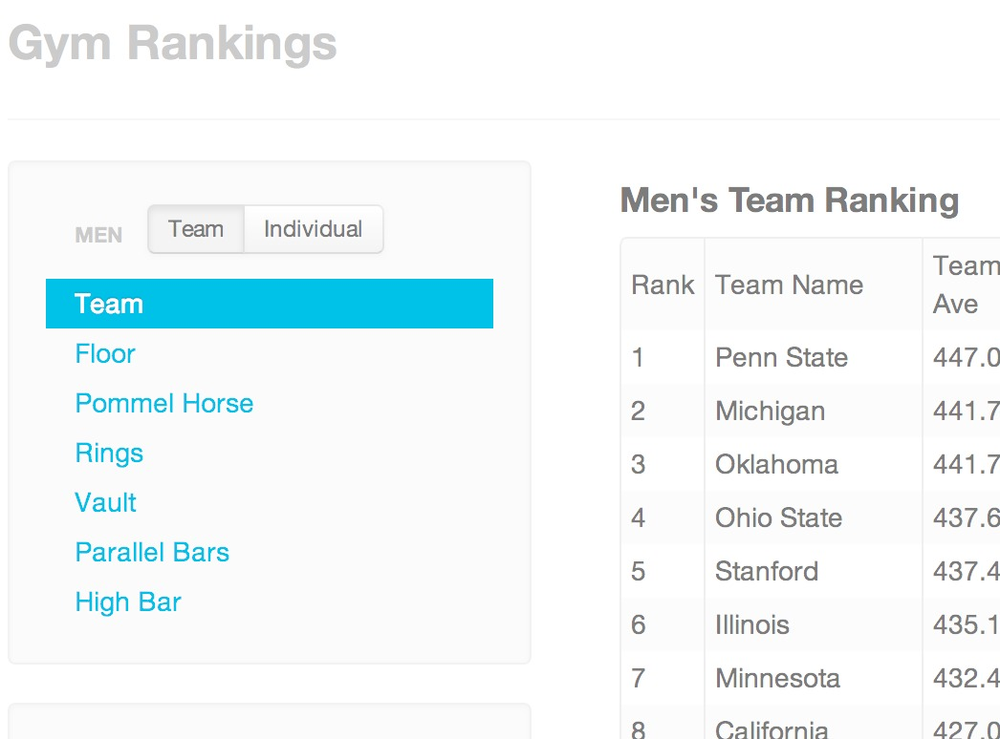

David Frankl
GymRankings.com
- Started as a project for CS184, GymRankings is my attempt to make access to NCAA Gymnastics Rankings easier and more intuitive. While this project is relatively narrow in scope, I hope to improve the experience of accessing NCAA Gymnastics rankings.
- GymRankings.com

Graphing Calculator
Lightweight(79KB) graphing utility for simple functionsScreen Shots

Solitaire
Written in conjuction with Dan Kramer and Jordan WaltersScreen Shots